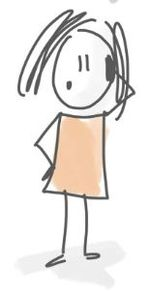

Pouvez-vous vous présenter en quelques lignes ainsi que votre parcours ?
Je m’appelle Stéphanie et je suis psychologue depuis 15 ans à l’école Abbé Jean Baptise Hermand à Omezée. J’ai directement commencé à travailler dans cette école. J’avais également une première perception de ce type d’enseignement grâce à ma maman qui a réalisé toute sa carrière là-bas. Une fois sur le terrain, j’ai appris à connaitre cet enseignement au fur et à mesure des années mais aussi grâce aux diverses rencontres ( PMS, équipe pluridisciplinaire). J’ai également suivi des formations.
